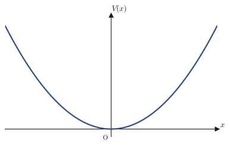
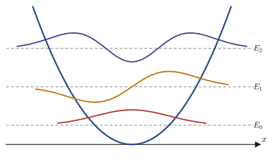
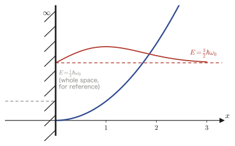
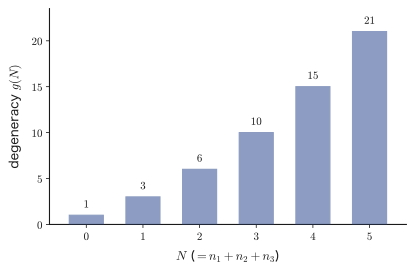
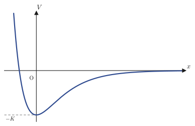

Chapter 46The Harmonic Oscillator and the Morse Potential
In the previous chapter (Chapter 45) we solved the problem of an electron confined in a box—the problem of a “hard wall,” with the potential equal to $0$ inside the box and $\infty$ outside. This chapter deals with a potential that, in contrast, appears most frequently in nature. Atoms in a crystal vibrate incessantly about equilibrium positions, where they are held by chemical bonds to neighboring atoms, and the interatomic distance of a diatomic molecule (such as $\mathrm{H_2}$ or $\mathrm{CO}$) also oscillates about its equilibrium value, as observed in infrared spectroscopy. For materials science students, the starting point for understanding the heat capacity, thermal conductivity, and infrared and Raman spectra of crystals is, without exception, the quantum mechanics of “small oscillations about an equilibrium point”—that is, of the harmonic oscillator.
Why does every system, whatever it is, have a potential of the same form near an equilibrium point? If we Taylor-expand a general potential $V(x)$ about an equilibrium point $x=0$ (a point where $V'(0)=0$, that is, a point where the forces balance), we obtain
$$ V(x)=V(0)+V'(0)x+\frac12V''(0)x^2+\cdots=V(0)+\frac12V''(0)x^2+\cdots $$(this is the Taylor expansion of Chapter 4), and as long as $x$ is small, the quadratic term is the first to take effect. If $V''(0)\gt0$ (a stable equilibrium point), then by setting $m\omega_0^2:=V''(0)$ any system reduces approximately to the harmonic oscillator potential $V(x)\approx\frac12m\omega_0^2x^2$. This is why the harmonic oscillator is called “the most important model system.” In Sections 46.1–46.2 we solve the Schrödinger equation for this potential completely by the Frobenius series method (Chapter 39), and meet one of the special functions, the Hermite polynomials. In Section 46.3 we treat the case of a “half-infinite domain” in which just one wall is erected, and in Section 46.4 the extension to three dimensions. Finally, in Section 46.5 we treat a potential for which the quadratic approximation alone is not enough—one that can describe even the point at which a molecule actually breaks apart (dissociates)—namely the Morse potential, and we see that the series method reduces to the same structure as Laguerre's differential equation of Chapter 41.
- Rewrite the Schrödinger equation for the harmonic oscillator potential $V(x)=\frac12m\omega_0^2x^2$ in terms of the dimensionless variable $u=\sqrt{m\omega_0/\hbar}\,x$
- Identify the asymptotic form $\psi(u)\sim e^{-u^2/2}$, set $\psi(u)=f(u)e^{-u^2/2}$, and derive Hermite's differential equation $f''-2uf'+(\varepsilon-1)f=0$
- Substitute the power series $f(u)=\sum a_ku^k$ to obtain a recurrence relation for the coefficients, and, from the fact that if the series continues indefinitely, it diverges and cannot be normalized, derive $\varepsilon=2n+1$ ($n=0,1,2,\ldots$), that is, the quantization of energy $E_n=\left(n+\frac12\right)\hbar\omega_0$—this procedure follows exactly the same “pattern” as the procedures for Legendre's equation in Chapter 40 and Laguerre's equation in Chapter 41
- Expressing the wave functions in terms of the Hermite polynomials $H_n(u)$, and determining the normalization constant
- The harmonic oscillator on the half-infinite domain $x\ge0$ with just one wall—confirming that the boundary condition $\psi(0)=0$ leaves only the odd-degree Hermite functions, and that the energy levels shift to $\left(2n+\frac32\right)\hbar\omega_0$
- The three-dimensional harmonic oscillator—its reduction to three independent one-dimensional problems by separation of variables, and the degeneracy (different combinations of quantum numbers giving the same energy) that appears in the isotropic case ($\omega_1=\omega_2=\omega_3$)
- Solve completely the Schrödinger equation for the Morse potential $V(x)=K(e^{-2Dx}-2e^{-Dx})$ (which represents the anharmonicity and dissociation of molecular vibrations) by reducing it to an equation of associated Laguerre type, and show that only finitely many bound states exist
Source notes: Yasuhide Mochizuki, Mathematics Notes: Partial Differential Equations, pp. 38–44.
46.1 The Harmonic Oscillator Potential and Nondimensionalization
Suppose that an electron moves along the $x$-axis and is placed in the time-independent (stationary-state) potential
$$ V(x)=\frac12m\omega_0^2x^2 $$Here $m$ is the mass of the electron, and $\omega_0$ is a positive constant expressing the “stiffness” of this potential (the angular frequency, whose dimension is $[\text{time}]^{-1}$). The problem of this section is to solve the stationary-state Schrödinger equation (Chapter 45)
$$ -\frac{\hbar^2}{2m}\nabla^2\psi+V\psi=E\psi $$for this potential. In one-dimensional Cartesian coordinates, $\nabla^2=\dfrac{\partial^2}{\partial x^2}$ (there is only one variable, so the distinction between partial and ordinary derivatives disappears, and we may write $\dfrac{d^2}{dx^2}$), so the equation becomes
$$ -\frac{\hbar^2}{2m}\frac{d^2\psi}{dx^2}+\frac12m\omega_0^2x^2\psi=E\psi $$This is a second-order linear ordinary differential equation.

46.1.1 Rewriting in dimensionless variables
This equation contains quantities of different dimensions, namely $x,\psi,E,m,\omega_0,\hbar$, and is awkward to handle as it stands. So we drive the physical constants out of the equation as far as possible and rewrite it using only dimensionless variables (variables that have no dimension and are simply real numbers). First, dividing both sides by $-\dfrac{\hbar^2}{2m}$ gives
$$ \frac{d^2\psi}{dx^2}-\frac{m^2\omega_0^2}{\hbar^2}x^2\psi+\frac{2mE}{\hbar^2}\psi=0 $$(Dividing $\dfrac12m\omega_0^2x^2$ by $-\dfrac{\hbar^2}{2m}$ changes the sign and gives $-\dfrac{m^2\omega_0^2}{\hbar^2}x^2$; dividing $E$ gives $-\dfrac{2mE}{\hbar^2}$, which we moved to the other side to get $+\dfrac{2mE}{\hbar^2}$.) Next, multiplying both sides by $\dfrac{\hbar}{m\omega_0}$ gives
$$ \frac{\hbar}{m\omega_0}\frac{d^2\psi}{dx^2}-\frac{m\omega_0}{\hbar}x^2\psi+\frac{2E}{\hbar\omega_0}\psi=0 $$(All we did was cancel factors: $\dfrac{m^2\omega_0^2}{\hbar^2}\times\dfrac{\hbar}{m\omega_0}=\dfrac{m\omega_0}{\hbar}$ and $\dfrac{2mE}{\hbar^2}\times\dfrac{\hbar}{m\omega_0}=\dfrac{2E}{\hbar\omega_0}$.) The reason for this rearrangement is that the coefficient $\dfrac{m\omega_0}{\hbar}$ of $x^2$ has dimension $[\text{length}]^{-2}$—that is, $\sqrt{m\omega_0/\hbar}$ has the dimension of an inverse length, and we can use it to make $x$ dimensionless.
Definition 46.1: Dimensionless variable $u$ and energy variable $\varepsilon$
$$ u:=\sqrt{\frac{m\omega_0}{\hbar}}\,x,\qquad \varepsilon:=\frac{2E}{\hbar\omega_0} $$Let us adopt these definitions. Using the chain rule (differentiation of composite functions), we rewrite derivatives with respect to $x$ as derivatives with respect to $u$. Although $\psi$ is originally a function of $x$, it can also be regarded as a function of $u$ through $u=\sqrt{m\omega_0/\hbar}\,x$, so we write it as $\psi(u)$.
$$ \frac{d\psi}{dx}=\frac{d\psi}{du}\cdot\frac{du}{dx}=\sqrt{\frac{m\omega_0}{\hbar}}\,\frac{d\psi}{du} $$(Since $u$ is a linear function of $x$, $\dfrac{du}{dx}=\sqrt{m\omega_0/\hbar}$ is a constant.) When we differentiate with respect to $x$ once more, we use the same chain rule, but this time we are differentiating “the product of the constant $\sqrt{m\omega_0/\hbar}$ and the function $\dfrac{d\psi}{du}$.” Since a constant multiple can be taken outside the derivative, we obtain
$$ \frac{d^2\psi}{dx^2}=\frac{d}{dx}\left(\sqrt{\frac{m\omega_0}{\hbar}}\frac{d\psi}{du}\right)=\sqrt{\frac{m\omega_0}{\hbar}}\cdot\frac{d}{dx}\left(\frac{d\psi}{du}\right)=\sqrt{\frac{m\omega_0}{\hbar}}\cdot\frac{d}{du}\left(\frac{d\psi}{du}\right)\cdot\frac{du}{dx}=\frac{m\omega_0}{\hbar}\cdot\frac{d^2\psi}{du^2} $$(In the last equality we multiplied by $\dfrac{du}{dx}=\sqrt{m\omega_0/\hbar}$ once more and combined $\sqrt{m\omega_0/\hbar}\times\sqrt{m\omega_0/\hbar}=m\omega_0/\hbar$.) Also, $x^2=u^2\cdot\dfrac{\hbar}{m\omega_0}$ (the equation obtained by squaring $u=\sqrt{m\omega_0/\hbar}\,x$ and solving for $x$). Substituting these into the equation we arranged earlier, $\dfrac{\hbar}{m\omega_0}\dfrac{d^2\psi}{dx^2}-\dfrac{m\omega_0}{\hbar}x^2\psi+\dfrac{2E}{\hbar\omega_0}\psi=0$, gives
$$ \frac{\hbar}{m\omega_0}\cdot\frac{m\omega_0}{\hbar}\frac{d^2\psi}{du^2}-\frac{m\omega_0}{\hbar}\cdot\frac{\hbar}{m\omega_0}u^2\psi+\varepsilon\psi=0 $$Here $\dfrac{\hbar}{m\omega_0}\cdot\dfrac{m\omega_0}{\hbar}=1$ cancels away in both of the two places, and the following remarkably simple form remains.
Theorem 46.1: The nondimensionalized harmonic oscillator equation
\begin{equation} \frac{d^2\psi}{du^2}+(\varepsilon-u^2)\psi=0 \label{eq:46-dimensionless} \end{equation}Here $u=\sqrt{m\omega_0/\hbar}\,x$ and $\varepsilon=2E/(\hbar\omega_0)$ are both dimensionless quantities (pure numbers with no units).
Example 46.1: Checking that $\varepsilon$ is really dimensionless
In SI units, the unit of the mass $m$ is $\mathrm{kg}$, the unit of the angular frequency $\omega_0$ is $\mathrm{s^{-1}}$, the unit of the energy $E$ is $\mathrm J=\mathrm{kg\,m^2\,s^{-2}}$, and the unit of the Planck constant $\hbar$ is $\mathrm{J\,s}=\mathrm{kg\,m^2\,s^{-1}}$. Verify, by substituting units, that $\varepsilon=2E/(\hbar\omega_0)$ and $u=\sqrt{m\omega_0/\hbar}\,x$ are each dimensionless.
Solution. The unit of the denominator $\hbar\omega_0$ of $\varepsilon$ is
$$ [\hbar\omega_0]=(\mathrm{kg\,m^2\,s^{-1}})\times(\mathrm{s^{-1}})=\mathrm{kg\,m^2\,s^{-2}}=\mathrm J $$This is exactly the same as the unit $\mathrm J$ of the numerator $E$. Therefore $\varepsilon=2E/(\hbar\omega_0)$ is “energy divided by energy”: the units cancel completely, and it is dimensionless.
Next, for $u=\sqrt{m\omega_0/\hbar}\,x$, computing the unit of the quantity under the radical sign gives
$$ \left[\frac{m\omega_0}{\hbar}\right]=\frac{\mathrm{kg}\times\mathrm{s^{-1}}}{\mathrm{kg\,m^2\,s^{-1}}}=\frac{1}{\mathrm m^2}=\mathrm{m^{-2}} $$so the unit of $\sqrt{m\omega_0/\hbar}$ is $\mathrm{m^{-1}}$ (the inverse of a length). Since we multiply this by $x$, which has the unit $\mathrm m$, the unit of $u$ is $\mathrm{m^{-1}}\times\mathrm m=1$ (dimensionless). Indeed, we have confirmed that both are dimensionless quantities. (Nondimensionalization of this kind—“dividing an energy by a reference value of energy” and “dividing a length by a reference value of length”—is a technique used extremely often when handling the equations of physics.)
46.1.2 Guessing the asymptotic form and Hermite's differential equation
Looking at Eq. \eqref{eq:46-dimensionless} directly is not enough to tell what kind of function satisfies it. So let us begin by examining how the equation behaves when $u$ is very large ($\abs u\to\infty$). If $\abs u$ is large enough, the constant $\varepsilon$ becomes negligibly small compared with $u^2$, so the equation becomes approximately
$$ \frac{d^2\psi}{du^2}-u^2\psi\approx0\qquad(\abs u\to\infty) $$That is, the equation can be regarded as taking this approximate form.
Intuition: How to guess the form of the solution (corresponds to the “Why? & How?” in the margin of the original notes)
Rather than searching blindly for a function satisfying $\psi''\approx u^2\psi$, let us assume the exponential form $\psi(u)=e^{S(u)}$ ($S(u)$ is a function to be determined). Then $\psi'=S'e^S$ and $\psi''=(S''+(S')^2)e^S$, so the equation becomes $S''+(S')^2\approx u^2$. Where $u$ is large, we expect the $(S')^2$ term to dominate $S''$ (an argument of this kind, which keeps only the leading terms, is called a dominant balance argument), and obtain $(S')^2\approx u^2$, that is, $S'\approx\pm u$, and therefore $S\approx\pm\dfrac{u^2}{2}$. Taking the $+$ sign gives $\psi\sim e^{+u^2/2}$, which diverges as $u\to\pm\infty$ and violates the normalization condition $\int\abs\psi^2\dd u\lt\infty$ of the wave function. Therefore the physically allowed solution must be the one obtained by taking the $-$ sign, namely
$$ \psi(u)\sim e^{-u^2/2}\qquad(\abs u\to\infty) $$Using this asymptotic behavior as a clue, we try writing the exact form of $\psi(u)$ as
$$ \psi(u)=f(u)\,e^{-u^2/2} $$Here $f(u)$ is expected to be a “slowly varying” function that does not change as rapidly as $e^{-u^2/2}$ (the expectation is that even as $u\to\infty$, $f(u)$ itself will not diverge so rapidly as to cancel $e^{-u^2/2}$).
Let us actually verify this form by substituting it into Eq. \eqref{eq:46-dimensionless}. First we compute the first and second derivatives of $\psi=fe^{-u^2/2}$ (product rule).
$$ \frac{d\psi}{du}=f'e^{-u^2/2}+f\cdot(-u)e^{-u^2/2}=\left(f'-uf\right)e^{-u^2/2} $$Using the product rule once more,
$$ \frac{d^2\psi}{du^2}=\frac{d}{du}\left[(f'-uf)e^{-u^2/2}\right]=(f''-f-uf')e^{-u^2/2}+(f'-uf)\cdot(-u)e^{-u^2/2} $$ $$ =\left[f''-f-uf'-uf'+u^2f\right]e^{-u^2/2}=\left[f''-2uf'+(u^2-1)f\right]e^{-u^2/2} $$(The first parenthesis is the result $f''-(f+uf')=f''-f-uf'$ of differentiating $f'-uf$ with respect to $u$ as it stands, and the second term is the result of multiplying $(f'-uf)$ by $-u$. Since $-uf'$ appears twice, we combined them into $-2uf'$, and we combined the terms in $f$ as $-f+u^2f=(u^2-1)f$.) Substituting this into Eq. \eqref{eq:46-dimensionless} gives
$$ \left[f''-2uf'+(u^2-1)f\right]e^{-u^2/2}+(\varepsilon-u^2)fe^{-u^2/2}=0 $$Both sides have the common factor $e^{-u^2/2}$ (which never equals $0$), so we may divide by it. Then $u^2f$ and $-u^2f$ cancel exactly:
$$ f''-2uf'+(u^2-1)f+(\varepsilon-u^2)f=0\ \Longrightarrow\ \frac{d^2f}{du^2}-2u\frac{df}{du}+(\varepsilon-1)f=0 $$This gives a clean second-order linear ordinary differential equation for $f(u)$ that contains no $u^2$.
Definition 46.2: Hermite's differential equation
\begin{equation} \frac{d^2f}{du^2}-2u\frac{df}{du}+(\varepsilon-1)f=0 \label{eq:46-hermite-ode} \end{equation}A differential equation of this form is called Hermite's differential equation. It is named after the nineteenth-century French mathematician Charles Hermite.
This equation can be solved in the form of a power series, $f(u)=\displaystyle\sum_{k=0}^\infty a_ku^k$ (the spirit is the same as that of the Frobenius method of Chapter 39, but since $u=0$ is not even a singular point of the equation but an ordinary point, we may look for a series $\sum a_ku^k$ in integer powers from the start). We will look at the procedure and the quantization of the energy levels in detail in the next section, Section 46.2.
46.2 The Power Series Method and Energy Levels (Hermite Polynomials)
46.2.1 Substituting the power series and the recurrence relation
Let us solve Hermite's differential equation \eqref{eq:46-hermite-ode} by looking for a solution in the form of the power series $f(u)=\displaystyle\sum_{k=0}^\infty a_ku^k$ (where $a_0,a_1,a_2,\ldots$ are coefficients to be determined). Differentiating term by term, we have
$$ \frac{df}{du}=\sum_{k=1}^\infty ka_ku^{k-1},\qquad \frac{d^2f}{du^2}=\sum_{k=2}^\infty k(k-1)a_ku^{k-2} $$(Here we apply to an infinite series, unchanged, the same reasoning as for the differentiation of polynomials that you learned in high school: the term with $k=0$ is a constant and so vanishes when differentiated, and the term with $k=1$ contributes only up to the first derivative.) Substituting these into Hermite's differential equation, we obtain
$$ \sum_{k=0}^\infty(k+1)(k+2)a_{k+2}u^k-2u\sum_{k=0}^\infty(k+1)a_{k+1}u^k+(\varepsilon-1)\sum_{k=0}^\infty a_ku^k=0 $$(The first sum is $\displaystyle\sum_{k=2}^\infty k(k-1)a_ku^{k-2}$ with the index shifted by $k\to k+2$ and rewritten so that it starts from $u^0$. The second sum is $-2u\displaystyle\sum_{k=1}^\infty ka_ku^{k-1}=-2\displaystyle\sum_{k=1}^\infty ka_ku^k$ with the index shifted by $k\to k+1$ so that it starts from $u^0$.) Since the coefficient of each power $u^k$ must be $0$,
$$ (k+1)(k+2)a_{k+2}-2ka_k+(\varepsilon-1)a_k=0\quad(k=0,1,2,\ldots) $$That is, we obtain the following recurrence relation.
Theorem 46.2: Recurrence relation for the Hermite series
\begin{equation} a_{k+2}=\frac{2k+1-\varepsilon}{(k+1)(k+2)}\,a_k\qquad(k=0,1,2,\ldots) \label{eq:46-recurrence} \end{equation}This recurrence relation has the structure that its index jumps by two at a time—that is, once $a_0$ is chosen, $a_2,a_4,a_6,\ldots$ (the coefficients of even degree) are all determined, and once $a_1$ is chosen, $a_3,a_5,a_7,\ldots$ (the coefficients of odd degree) are all determined. Since Hermite's differential equation is a second-order linear equation, it should have two independent solutions, and these correspond exactly to the two solutions here, the “even-function solution” and the “odd-function solution.” The constants $a_0,a_1$ are arbitrary constants that can be chosen freely as initial values (they are finally fixed by the boundary conditions and the normalization condition).
Let us actually substitute $k=0,2,4,\ldots$ and write out the even-degree coefficients explicitly in terms of $a_0$.
$$ a_2=\frac{1-\varepsilon}{1\cdot2}a_0=-\frac{\varepsilon-1}2a_0,\qquad a_4=\frac{5-\varepsilon}{3\cdot4}a_2=(-1)^2\frac{(\varepsilon-1)(\varepsilon-5)}{4!}a_0 $$(In the formula for $a_4$, we further substituted the formula for $a_2$ and simplified: $\dfrac{5-\varepsilon}{12}\times\left(-\dfrac{\varepsilon-1}2\right)=\dfrac{(\varepsilon-1)(\varepsilon-5)}{24}=\dfrac{(\varepsilon-1)(\varepsilon-5)}{4!}$.) Repeating the same computation, we obtain the general term
$$ a_{2n}=(-1)^n\frac{(\varepsilon-1)(\varepsilon-5)\cdots(\varepsilon-4n+3)}{(2n)!}a_0 $$Similarly, for the odd-degree coefficients, starting from $k=1,3,\ldots$ we have
$$ a_3=\frac{3-\varepsilon}{2\cdot3}a_1=-\frac{\varepsilon-3}{3!}a_1,\qquad a_5=\frac{7-\varepsilon}{4\cdot5}a_3=(-1)^2\frac{(\varepsilon-3)(\varepsilon-7)}{5!}a_1 $$(We compute $a_5$ from $a_5=\dfrac{2\cdot3+1-\varepsilon}{4\cdot5}a_3=\dfrac{7-\varepsilon}{20}a_3$, which is obtained by substituting $k=3$ into the recurrence relation. The numerator is $7-\varepsilon$, not $3-\varepsilon$; note that each time $k$ changes, the value of $k$ in the numerator $2k+1-\varepsilon$ of the recurrence relation is updated as well. Computed this way, we get exactly the form $(\varepsilon-3)(\varepsilon-7)/5!$, in which the second factor has been multiplied in.) We thus obtain the general term
$$ a_{2n+1}=(-1)^n\frac{(\varepsilon-3)(\varepsilon-7)\cdots(\varepsilon-4n+1)}{(2n+1)!}a_1 $$Using these, the general solution of Hermite's differential equation can be written as the sum of a series consisting only of even-degree terms (the $a_0$ part) and a series consisting only of odd-degree terms (the $a_1$ part):
$$ f(u)=a_0\left\{1-\frac{\varepsilon-1}{2!}u^2+\frac{(\varepsilon-1)(\varepsilon-5)}{4!}u^4-\cdots\right\}+a_1\left\{u-\frac{\varepsilon-3}{3!}u^3+\frac{(\varepsilon-3)(\varepsilon-7)}{5!}u^5-\cdots\right\} $$The original wave function is $\psi(u)=f(u)e^{-u^2/2}$, so we have
$$ \psi(u)=a_0e^{-u^2/2}\left\{1-\frac{\varepsilon-1}{2!}u^2+\frac{(\varepsilon-1)(\varepsilon-5)}{4!}u^4-\cdots\right\}+a_1e^{-u^2/2}\left\{u-\frac{\varepsilon-3}{3!}u^3+\frac{(\varepsilon-3)(\varepsilon-7)}{5!}u^5-\cdots\right\} $$Let us now examine how these two series behave as they continue.
46.2.2 The case of a divergent series, and quantization of energy
Let us examine what happens if the series continues indefinitely (that is, if $a_0,a_1$ are both chosen to be values other than $0$ and $2k+1-\varepsilon\ne0$ for every $k$). Looking at the ratio in the recurrence relation \eqref{eq:46-recurrence} for very large $k$, we find
$$ \frac{a_{k+2}}{a_k}=\frac{2k+1-\varepsilon}{(k+1)(k+2)}\ \xrightarrow[k\to\infty]{}\ \frac{2k}{k^2}=\frac2k\ \sim\ \frac1{k/2} $$This is exactly the same asymptotic behavior as that of the ratio of adjacent coefficients $\dfrac{1/(j+1)!}{1/j!}=\dfrac1{j+1}$ of the exponential function $e^{u^2}=\displaystyle\sum_{j=0}^\infty\frac{u^{2j}}{j!}$ (if we set $k=2j$, then $\dfrac1{j+1}=\dfrac2{k+2}\sim\dfrac2k$). In other words, if the series continues indefinitely, $f(u)$ grows for large $u$ at almost the same rate as $e^{u^2}$.
Caution: The series cannot be normalized unless it terminates (corresponds to the “Attention!!” in the margin of the original notes)
If the series continues indefinitely, then $f(u)\sim e^{u^2}$ (up to a constant factor), so the original wave function would end up as
$$ \psi(u)=f(u)e^{-u^2/2}\sim e^{u^2}\cdot e^{-u^2/2}=e^{u^2/2}\ \xrightarrow[u\to\pm\infty]{}\ \infty $$This is exactly the divergent solution that we were supposed to have excluded in the “Intuition” box in Section 46.1.2. Therefore the series must terminate somewhere, after finitely many terms; that is, $f(u)$ must be not an infinite series but a polynomial of finite degree.
Looking at the recurrence relation \eqref{eq:46-recurrence}, we see that there is only one way to make the series terminate after finitely many terms: the numerator must become $0$ for some nonnegative integer $n$, namely, the condition
$$ 2n+1-\varepsilon=0,\qquad\text{that is,}\qquad \varepsilon=2n+1\qquad(n=0,1,2,\ldots) $$must be satisfied. In this case $a_{n+2}=0$, and by the recurrence relation the coefficients $a_{n+4}=a_{n+6}=\cdots=0$ also all become $0$ (since every term that starts from $a_{n+2}=0$ is proportional to $a_{n+2}$). However, what terminates in this way is only the sequence of every other coefficient starting from $a_n$ (one of $a_0,a_2,a_4,\ldots$ or $a_1,a_3,a_5,\ldots$, namely the one whose indices have the same parity as $n$), so the other sequence must be chosen to be $0$ from the start (that is, $a_1=0$ if $n$ is even, and $a_0=0$ if $n$ is odd). Only then does $f(u)$ become a polynomial of degree $n$.
Theorem 46.3: Energy levels of the harmonic oscillator (quantization of energy)
For the wave function not to diverge as $u\to\pm\infty$ (that is, for it to be normalizable), we must have $\varepsilon=2n+1$ ($n=0,1,2,\ldots$). Since $\varepsilon=2E/(\hbar\omega_0)$, this means
\begin{equation} E_n=\left(n+\frac12\right)\hbar\omega_0\qquad(n=0,1,2,\ldots) \label{eq:46-energy-levels} \end{equation}That is, the energy of the harmonic oscillator cannot take continuous values; only discrete values in units of $\hbar\omega_0$ (a discrete spectrum) are allowed.
Application: Zero-point energy and phonons
Even for $n=0$ (the ground state), the energy is $E_0=\frac12\hbar\omega_0$ and never becomes $0$. This is called the zero-point energy. In classical mechanics, being “at rest” is the lowest-energy state, but the quantum-mechanical harmonic oscillator does not come completely to rest even at absolute zero and keeps vibrating slightly. The collective vibrations of the atoms in a crystal are treated as “particles” with the quantized unit of energy $\hbar\omega_0$—phonons—and play the leading role in the theory of the specific heat and thermal conductivity of materials. The formula $E_n=(n+\frac12)\hbar\omega_0$ derived in this chapter is exactly the set of energy levels of a single phonon mode.

46.2.3 Hermite polynomials and wave functions
When $\varepsilon=2n+1$, the recurrence relation \eqref{eq:46-recurrence} becomes $a_{k+2}=\dfrac{2k-2n}{(k+1)(k+2)}a_k=-\dfrac{2(n-k)}{(k+1)(k+2)}a_k$. The polynomial solution of degree $n$ built from this, with the choice of the constant multiple (the convention for normalization) fixed, is written $H_n(u)$ and called the Hermite polynomial. Writing out the first few explicitly, we have
$$ H_0(u)=1,\quad H_1(u)=2u,\quad H_2(u)=4u^2-2,\quad H_3(u)=8u^3-12u,\quad H_4(u)=16u^4-48u^2+12 $$(For $n=0,1,2,3,4$, these are obtained by computing the coefficients from the recurrence relation and choosing the constant multiple so that the leading coefficient is $2^n$. We ran the recurrence relation in SymPy for $n=0,\ldots,5$ and verified that the result agrees with the standard definition of the Hermite polynomials; see the verification at the end of the book.) For general $n$, assembling the general terms of the even-degree and odd-degree coefficients found in Section 46.2.1, we can write the polynomial as the following sum in closed form.
$$ H_n(y)=\sum_{k=0}^{\left[\frac n2\right]}\frac{(-1)^k\,n!}{(n-2k)!\,k!}(2y)^{n-2k} $$($[\,\cdot\,]$ is the floor function. If $n$ is even, $k$ runs from $0$ to $n/2$; if it is odd, from $0$ to $(n-1)/2$; and the coefficient of the highest-degree term ($k=0$) is exactly $2^n$. For example, for $n=2$ the sum of the two terms $k=0,1$ is $2!/(2!0!)(2y)^2-2!/(0!1!)(2y)^0=4y^2-2=H_2(y)$, which indeed agrees.) Returning to the original variable $x$, the wave functions can be summarized as follows.
Theorem 46.4: Wave functions of the harmonic oscillator (normalized)
$$ \psi_n(x)=\left(\frac{m\omega_0}{\pi\hbar}\right)^{1/4}\frac{1}{\sqrt{2^nn!}}\,H_n\!\left(\sqrt{\frac{m\omega_0}{\hbar}}\,x\right)e^{-\frac{m\omega_0}{2\hbar}x^2}\qquad(n=0,1,2,\ldots) $$The normalization constant $C_n=\left(\dfrac{m\omega_0}{\pi\hbar}\right)^{1/4}\dfrac1{\sqrt{2^nn!}}$ is determined by the normalization condition $\displaystyle\int_{-\infty}^\infty\abs{\psi_n(x)}^2\dd x=1$ (in the next Example 46.2 we actually compute the case $n=0$).
Example 46.2: Normalization of the ground state $\psi_0(x)$
For $n=0$ we have $H_0(u)=1$, so $\psi_0(x)=C_0\,e^{-\frac{m\omega_0}{2\hbar}x^2}$. Find the constant $C_0$ from the normalization condition $\displaystyle\int_{-\infty}^\infty\psi_0(x)^2\dd x=1$.
Solution. Let $a=\dfrac{m\omega_0}{\hbar}$. Then $\psi_0(x)^2=C_0^2e^{-ax^2}$. Using the Gaussian integral formula $\displaystyle\int_{-\infty}^\infty e^{-ax^2}\dd x=\sqrt{\dfrac\pi a}$ ($a\gt0$; see the proof of the Gaussian integral in Chapter 7), we have
$$ \int_{-\infty}^\infty\psi_0(x)^2\dd x=C_0^2\sqrt{\frac\pi a}=C_0^2\sqrt{\frac{\pi\hbar}{m\omega_0}}=1 $$From this we obtain
$$ C_0^2=\sqrt{\frac{m\omega_0}{\pi\hbar}},\qquad\therefore\ C_0=\left(\frac{m\omega_0}{\pi\hbar}\right)^{1/4} $$This agrees with $C_0$ obtained from the formula of Theorem 46.4 with $n=0$ ($2^0\cdot0!=1$) (we actually computed $\int_{-\infty}^\infty\psi_0^2\dd x$ with SymPy and verified that it equals $1$).
Example 46.3: The first excited state $\psi_1(x)$ and orthogonality
Using $H_1(u)=2u$, write down $\psi_1(x)$, and show that $\displaystyle\int_{-\infty}^\infty\psi_0(x)\psi_1(x)\dd x=0$ (that is, that $\psi_0$ and $\psi_1$ are orthogonal) from the parity of the functions alone, without any computation.
Solution. Substituting $n=1$, $H_1(u)=2u$, and $u=\sqrt{m\omega_0/\hbar}\,x$ into Theorem 46.4, we obtain
$$ \psi_1(x)=\left(\frac{m\omega_0}{\pi\hbar}\right)^{1/4}\frac1{\sqrt2}\cdot2\sqrt{\frac{m\omega_0}{\hbar}}\,x\cdot e^{-\frac{m\omega_0}{2\hbar}x^2}=\sqrt2\left(\frac{m\omega_0}{\pi\hbar}\right)^{1/4}\sqrt{\frac{m\omega_0}{\hbar}}\;x\,e^{-\frac{m\omega_0}{2\hbar}x^2} $$Here $\psi_0(x)=C_0e^{-\frac{m\omega_0}{2\hbar}x^2}$ is an even function, whose value does not change under $x\to-x$ ($e^{-ax^2}$ contains only even powers of $x$), whereas $\psi_1(x)$ has $x$ as a lone factor (the rest is an even-function part that depends only on $x^2$), so it is an odd function (a function whose sign alone changes under $x\to-x$). The product of an even function and an odd function is an odd function (if we write an even function as $g(x)=g(-x)$ and an odd function as $h(x)=-h(-x)$, then under $x\to-x$ the product $g(x)h(x)$ becomes $g(-x)h(-x)=g(x)\cdot(-h(x))=-g(x)h(x)$, so its sign is reversed and it is an odd function). Therefore $\psi_0(x)\psi_1(x)$ is an odd function, and when an odd function is integrated over the interval $(-\infty,\infty)$, which is symmetric about the origin, the positive and negative parts cancel each other exactly, giving
$$ \int_{-\infty}^\infty\psi_0(x)\psi_1(x)\dd x=0 $$Without carrying out a single line of computation, we have established orthogonality from the symmetry of the functions alone (we also verified with SymPy that actually computing the integral gives $0$). In general, for even $n$, $\psi_n$ is an even function, and for odd $n$, $\psi_n$ is an odd function, and two functions $\psi_n,\psi_m$ of different parity (that is, with $n-m$ odd) are always orthogonal for this reason alone.
Math Note: Orthogonality of the Hermite polynomials
In fact, the orthogonality of $\psi_n$ and $\psi_m$ ($n\ne m$) also holds when the parities are the same ($n-m$ is even). It is known that, in general,
$$ \int_{-\infty}^\infty H_n(u)H_m(u)e^{-u^2}\dd u=0\qquad(n\ne m) $$holds (verified numerically with SymPy for the combinations of $n,m=0,1,2,3$). This is an instance of a general property common to quantum mechanics: eigenfunctions belonging to different energy levels are orthogonal to each other.
46.3 The Harmonic Oscillator on a Half-Infinite Domain
Next we consider a problem that closely resembles those of the previous sections but differs in just one respect. Suppose an electron lies on the $x$-axis and is in a time-independent state. The potential, however, is as follows:
$$ V(x)=\begin{cases}\dfrac12m\omega_0^2x^2 & (x\ge0)\\[2mm] \infty & (x\lt0)\end{cases} $$This potential has a single “hard wall” erected at $x=0$. In other words, the particle is confined to the side $x\ge0$, that is, to the right half of the harmonic oscillator potential only. The equation to be solved is as follows:
$$ -\frac{\hbar^2}{2m}\frac{d^2\psi}{dx^2}+V\psi=E\psi,\qquad \text{boundary condition}\ \ \psi(0)=0 $$This is the equation to be solved, along with its boundary condition.
Why is the boundary condition $\psi(0)=0$? (explanation added in this book)
For $x\lt0$ the potential energy is $\infty$, so no matter how large an electron's energy is, it can never enter that side (one cannot climb over a wall of infinite height). Therefore, for $x\lt0$ the probability density $\abs{\psi(x)}^2$ is identically $0$; that is, $\psi(x)=0$ ($x\lt0$). Since the wave function must be continuous at $x=0$ (a physically natural requirement), the value of the function on the $x\ge0$ side must also equal $0$ in the limit $x\to0$. This is the meaning of the boundary condition $\psi(0)=0$.
46.3.1 Solution for $x\ge0$ and the boundary condition
For $x\lt0$ we have $\psi(x)=0$. For $x\ge0$, the shape of the potential, $\frac12m\omega_0^2x^2$, is exactly the same as in Sections 46.1–46.2, so if we use the same dimensionless variables $u=\sqrt{m\omega_0/\hbar}\,x$ (now $u\ge0$) and $\varepsilon=2E/(\hbar\omega_0)$, both the equation and the general solution of Section 46.2 can be used as they are. That is, borrowing the notation of Section 46.2.1, the general solution found there is
$$ \psi(u)=a_0e^{-u^2/2}\left\{1-\frac{\varepsilon-1}{2!}u^2+\frac{(\varepsilon-1)(\varepsilon-5)}{4!}u^4-\cdots\right\}+a_1e^{-u^2/2}\left\{u-\frac{\varepsilon-3}{3!}u^3+\frac{(\varepsilon-3)(\varepsilon-7)}{5!}u^5-\cdots\right\} $$(the first term is the even part and the second term is the odd part). Let us impose the boundary condition $\psi(0)=0$. Substituting $u=0$, the braces of the even part become $1-0+0-\cdots=1$ (at $u=0$ only the initial constant term remains), and the braces of the odd part become $0-0+0-\cdots=0$ (since every term contains a positive power of $u$), so we obtain
$$ \psi(0)=a_0\cdot1+a_1\cdot0=a_0 $$Therefore, in order for $\psi(0)=0$ to hold, the following is required:
$$ a_0=0 $$In other words, whereas in the problem on the whole space both even and odd functions were allowed, on the half-infinite domain only the odd solutions survive.
Theorem 46.5: Energy levels on a half-infinite domain
In order for the general solution $\psi(u)=a_1\left\{u-\dfrac{\varepsilon-3}{3!}u^3+\cdots\right\}$ that remains after setting $a_0=0$ not to diverge as $u\to\infty$, the series must terminate after finitely many terms, by exactly the same argument as in Section 46.2.2. Since only the odd-degree terms survive now, the condition for termination is that $n'$ in $\varepsilon=2n'+1$ be odd. Writing $n'=2n+1$ ($n=0,1,2,\ldots$), we get $\varepsilon=2(2n+1)+1=4n+3$, and the energy takes only the discrete values
\begin{equation} E=\left(n'+\frac12\right)\hbar\omega_0=\left(2n+\frac32\right)\hbar\omega_0\qquad(n=0,1,2,\ldots) \label{eq:46-halfline-energy} \end{equation}That is, the energy is quantized to these levels.
Using the Hermite polynomials of Section 46.2.3, the wave function can be written $\psi(x)=a_1H_{n'}\!\left(\sqrt{m\omega_0/\hbar}\,x\right)e^{-\frac{m\omega_0}{2\hbar}x^2}$ ($x\ge0$; $n'=2n+1$ is odd). Noting that $\psi=0$ for $x\lt0$, the normalization condition is as follows:
$$ \int_{-\infty}^\infty\abs{\psi(x)}^2\dd x=\int_0^\infty\abs{\psi(x)}^2\dd x=1 $$Here there is an important point to note.
Caution: The normalization constant does not take the same form as in the whole-space case
The $\psi_{n'}(x)$ of Section 46.2.3 (whole space, the Hermite function of degree $n'$) was normalized so that integrating from $-\infty$ to $\infty$ gives $1$. When $n'$ is odd, $\psi_{n'}(x)^2$ is an even function, so halving the interval of integration halves the value:
$$ \int_0^\infty\psi_{n'}(x)^2\dd x=\frac12\int_{-\infty}^\infty\psi_{n'}(x)^2\dd x=\frac12 $$(this holds when $\psi_{n'}$ is built with the whole-space normalization constant $C_{n'}$). Therefore, to make $\displaystyle\int_0^\infty\abs\psi^2\dd x=1$ in the half-infinite problem of this section, we must not use the whole-space normalization constant $C_{n'}=\left(\dfrac{m\omega_0}{\pi\hbar}\right)^{1/4}\dfrac1{\sqrt{2^{n'}n'!}}$ as it is, but must use the constant multiplied by $\sqrt2$,
$$ a_{n'}=\sqrt2\left(\frac{m\omega_0}{\pi\hbar}\right)^{1/4}\frac1{\sqrt{2^{n'}n'!}}=\left(\frac{4m\omega_0}{\pi\hbar}\right)^{1/4}\frac1{\sqrt{2^{n'}n'!}} $$as the normalization constant (we rewrote it using $4^{1/4}=\sqrt2$). This is a very natural correction: since the interval of integration is halved, the constant is made larger to keep the total probability density unchanged (we actually computed $\displaystyle\int_0^\infty\abs\psi^2\dd x$ with SymPy for $n'=1,3$ and confirmed that the correction by the factor $\sqrt2$ is indeed necessary—see the verification at the end of the book).

Example 46.4: Comparing the ground-state energy with and without the wall
Compare the ground-state energy of the harmonic oscillator on the whole space, $E_0^{\text{whole}}=\frac12\hbar\omega_0$, with the ground-state energy $E_0^{\text{half}}$ (Eq. \eqref{eq:46-halfline-energy} with $n=0$) of the harmonic oscillator on the half-infinite domain ($x\ge0$, one wall), and explain the difference physically.
Solution. Substituting $n=0$ into Eq. \eqref{eq:46-halfline-energy} gives $E_0^{\text{half}}=\left(2\cdot0+\frac32\right)\hbar\omega_0=\frac32\hbar\omega_0$. Therefore the difference is
$$ E_0^{\text{half}}-E_0^{\text{whole}}=\frac32\hbar\omega_0-\frac12\hbar\omega_0=\hbar\omega_0 $$The ground state on the half-infinite domain coincides with the first excited state of the whole space, $\psi_1(x)\propto xe^{-m\omega_0x^2/2\hbar}$ (Section 46.2.3), simply restricted to the side $x\ge0$—the ground state of the whole space, $\psi_0(x)\propto e^{-m\omega_0x^2/2\hbar}$, does not take the value $0$ at $x=0$ ($\psi_0(0)=C_0\ne0$), so it cannot satisfy the boundary condition $\psi(0)=0$ and is forbidden. Because of the wall, the “smoothest” (nodeless) solution can no longer be used, and instead the “solution with one node” is promoted to the lowest-energy state—this is the real reason for the raising of the energy by $1\hbar\omega_0$. (In general, the energy increases by roughly $\hbar\omega_0$ for each additional node of the wave function, and this is an easily understood example of a tendency common to quantum mechanics.)
46.4 The Three-Dimensional Harmonic Oscillator
Next we consider the case in which an electron moves in three-dimensional space $(x,y,z)$. Under the potential that has a (generally different) spring constant in each of the three directions,
$$ V(x,y,z)=\frac12m\omega_1^2x^2+\frac12m\omega_2^2y^2+\frac12m\omega_3^2z^2 $$let us solve the Schrödinger equation for stationary states
$$ -\frac{\hbar^2}{2m}\nabla^2\psi+V\psi=E\psi $$In three-dimensional Cartesian coordinates, $\nabla^2=\dfrac{\partial^2}{\partial x^2}+\dfrac{\partial^2}{\partial y^2}+\dfrac{\partial^2}{\partial z^2}$ (partial derivatives of multivariable functions, Chapter 6; the Laplacian, Chapter 44), so the equation becomes
$$ -\frac{\hbar^2}{2m}\left(\frac{\partial^2\psi}{\partial x^2}+\frac{\partial^2\psi}{\partial y^2}+\frac{\partial^2\psi}{\partial z^2}\right)+\frac12m\left(\omega_1^2x^2+\omega_2^2y^2+\omega_3^2z^2\right)\psi=E\psi $$.
46.4.1 Separation of variables
Taking note of the fact that the potential is a sum of terms each depending on only one of $x,y,z$ (it contains no cross terms such as $xy$ or $yz$), we set $\psi(x,y,z)=X(x)Y(y)Z(z)$ (the method of separation of variables, Chapter 43). Substituting this into the equation and dividing both sides by $XYZ$, we obtain
$$ \underbrace{\left(-\frac{\hbar^2}{2m}\frac{X''}{X}+\frac12m\omega_1^2x^2\right)}_{=:E_1}+\underbrace{\left(-\frac{\hbar^2}{2m}\frac{Y''}{Y}+\frac12m\omega_2^2y^2\right)}_{=:E_2}+\underbrace{\left(-\frac{\hbar^2}{2m}\frac{Z''}{Z}+\frac12m\omega_3^2z^2\right)}_{=:E_3}=E $$(note that $\dfrac{\partial^2\psi}{\partial x^2}=X''YZ$ and so on, with the $x$-derivative in $X''$ acting only on the factor $X$). The three parentheses on the left-hand side are functions of $x$ alone, of $y$ alone, and of $z$ alone, respectively, whereas $E$ on the right-hand side is a constant. For an equation of the form “a function of $x$ alone” + “a function of $y$ alone” + “a function of $z$ alone” = constant to hold for arbitrary $x,y,z$, each of the three parentheses must be a constant (the three constants being independent of one another); this is exactly the same argument as in the case of the two-dimensional wave equation in Chapter 43, Section 43.5. We therefore denote the three parentheses by $E_1,E_2,E_3$ (with $E_1+E_2+E_3=E$), and the equation splits into three independent one-dimensional problems.
Theorem 46.6: Separation of variables for the three-dimensional harmonic oscillator
The equation decomposes into the following three one-dimensional Schrödinger equations.
$$ -\frac{\hbar^2}{2m}\frac{d^2X}{dx^2}+\frac12m\omega_1^2x^2X=E_1X,\quad -\frac{\hbar^2}{2m}\frac{d^2Y}{dy^2}+\frac12m\omega_2^2y^2Y=E_2Y,\quad -\frac{\hbar^2}{2m}\frac{d^2Z}{dz^2}+\frac12m\omega_3^2z^2Z=E_3Z $$Each of these is exactly the equation of the one-dimensional harmonic oscillator solved in Sections 46.1–46.2 (only the angular frequency differs, being $\omega_1,\omega_2,\omega_3$).
Therefore the results of Section 46.2 can be used as they are, and independent quantum numbers $n_1,n_2,n_3=0,1,2,\ldots$ appear, one for each direction.
Theorem 46.7: Wave functions and energies of the three-dimensional harmonic oscillator
$$ X(x)=\left(\frac{m\omega_1}{\pi\hbar}\right)^{1/4}\frac1{\sqrt{2^{n_1}n_1!}}H_{n_1}\!\left(\sqrt{\frac{m\omega_1}{\hbar}}x\right)e^{-\frac{m\omega_1}{2\hbar}x^2}\qquad(n_1=0,1,2,\ldots) $$(the functions $Y(y),Z(z)$ can be written in the same way, with $\omega_2,\omega_3$ and $n_2,n_3$). From these, the total wave function is the product $\psi=X(x)Y(y)Z(z)$, and the energy is given by the sum
\begin{equation} E=E_1+E_2+E_3=\left(n_1+\frac12\right)\hbar\omega_1+\left(n_2+\frac12\right)\hbar\omega_2+\left(n_3+\frac12\right)\hbar\omega_3 \label{eq:46-3d-energy} \end{equation}.
46.4.2 The isotropic harmonic oscillator and degeneracy
In particular, when the spring constants in the three directions are all equal ($\omega_1=\omega_2=\omega_3=\omega_0$; this is called an isotropic harmonic oscillator), Eq. \eqref{eq:46-3d-energy} becomes
$$ E=\left(n_1+n_2+n_3+\frac32\right)\hbar\omega_0 $$and the energy is determined only by the sum $N:=n_1+n_2+n_3$ of the three quantum numbers. This has an important consequence—even for the same $N$ there can be many combinations $(n_1,n_2,n_3)$, so that different quantum states have the same energy. This phenomenon is called degeneracy.
Definition 46.3: Degree of degeneracy
The number of quantum states (here, triples $(n_1,n_2,n_3)$) that give a particular energy value is called the degree of degeneracy of that energy level.
Let us count the triples $(n_1,n_2,n_3)$ satisfying $N=n_1+n_2+n_3$ ($n_1,n_2,n_3$ are integers greater than or equal to $0$). This is exactly the combinations-with-repetition problem of high school mathematics (Mathematics A, a course in the Japanese high-school curriculum)—“the number of ways to distribute $N$ identical objects into three boxes (one for $n_1$, one for $n_2$, and one for $n_3$)”—and the answer is given by ${}_3\mathrm H_N={}_{N+2}\mathrm C_2=\dfrac{(N+1)(N+2)}2$ (this is the standard way of counting combinations with repetition: arranging two dividers and $N$ balls in a row, in $_{N+2}C_2$ ways).
Theorem 46.8: Degree of degeneracy of the isotropic three-dimensional harmonic oscillator
$$ g(N)=\frac{(N+1)(N+2)}2\qquad(N=0,1,2,\ldots) $$
Example 46.5: Counting the degree of degeneracy for $N=1$ ($E=\frac52\hbar\omega_0$) by explicit enumeration
For the isotropic three-dimensional harmonic oscillator, write out all triples $(n_1,n_2,n_3)$ satisfying $N=n_1+n_2+n_3=1$ ($n_1,n_2,n_3$ are integers greater than or equal to $0$), and verify that their number agrees with $g(1)$ from the formula in Theorem 46.8.
Solution. The only triples of nonnegative integers whose sum is $1$ are those in which exactly one of them is $1$ and the other two are $0$. Writing them all out, we get
$$ (n_1,n_2,n_3)=(1,0,0),\ (0,1,0),\ (0,0,1) $$There are three possibilities in all. Hence the degree of degeneracy is $3$. On the other hand, the formula gives $g(1)=\dfrac{(1+1)(1+2)}2=\dfrac{2\times3}2=3$, which agrees. All three of these states have the energy $E=\left(1+\frac32\right)\hbar\omega_0=\frac52\hbar\omega_0$, but their wave functions are completely different (orthogonal) states: “excited by one quantum in the $x$ direction only,” “excited by one quantum in the $y$ direction only,” and “excited by one quantum in the $z$ direction only,” respectively.
Application: Anisotropy and the lifting of degeneracy
If $\omega_1,\omega_2,\omega_3$ are all different from one another (an anisotropic oscillator), the energy $E=\sum_i(n_i+\frac12)\hbar\omega_i$ generally takes a different value for each combination $(n_1,n_2,n_3)$, and the threefold degeneracy seen in Example 46.5 is lifted (split). For atoms in a crystal, the lower the symmetry of the crystal, the more readily the spring constants differ from direction to direction; conversely, where the crystal symmetry is high (cubic crystals and the like, crystal structures in which the three directions $x,y,z$ are equivalent), several vibrational modes remain degenerate. In this way, “whether and how the degeneracy is lifted” provides a clue for reading off the symmetry of the crystal structure.
46.5 The Morse Potential
The potential $V(x)=\frac12m\omega_0^2x^2$ treated in Sections 46.1–46.4 was a good approximation that holds for any stable equilibrium point (as long as the amplitude of the oscillation is small; see the lead paragraph at the beginning of this chapter). However, if the interatomic distance of a real diatomic molecule (such as $\mathrm{H_2}$, $\mathrm{HCl}$, or $\mathrm{CO}$) is made to oscillate with a large amplitude, the molecule eventually dissociates (comes apart into separate pieces). Because the parabola $\frac12m\omega_0^2x^2$ keeps growing without bound as $x\to\pm\infty$, it cannot express the breaking of the molecule (that is, the convergence of the potential to a finite value) no matter how much energy is supplied. To remedy this shortcoming, the American physicist Philip M. Morse proposed in 1929 the following Morse potential.
Definition 46.4: Morse potential
$$ V(x)=K\left(e^{-2Dx}-2e^{-Dx}\right)\qquad(K,D\ \text{are positive real constants}) $$
Application: Dissociation energy and molecular vibrational spectroscopy
The shape $V(-\infty)=+\infty$ (the nuclei repel each other strongly when they come too close), $V(0)=-K$ (the minimum value at the equilibrium distance, which we confirm in Example 46.6), $V(+\infty)=0$ (the interaction vanishes once the interatomic distance becomes large enough) reproduces well the overall shape of the interatomic potential of a real diatomic molecule. The difference $V(+\infty)-V(0)=K$ corresponds to the energy required to break the molecule completely apart (to dissociate it)—the dissociation energy. When we solve the problem quantum-mechanically in this section, we will find, as shown later, that the number of bound states (states in which the molecule can exist) is finite, and this forms the basis of the theory that explains the vibrational spectra of molecules observed in infrared spectroscopy (the levels are not equally spaced; the higher the level, the narrower the spacing).
The equation to be solved is
$$ -\frac{\hbar^2}{2m}\frac{d^2\psi}{dx^2}+K\left(e^{-2Dx}-2e^{-Dx}\right)\psi=E\psi $$Note that here, for the first time, the description in the original notes breaks off completely at a certain point (this is described in Section 46.5.3). From that point on, this book supplies, in a mathematically correct form, the continuation that was not written in the original notes, and completes the argument. Which parts were written in the original notes and which parts have been supplied is stated explicitly in the main text.
46.5.1 Transformation to dimensionless variables
Following the same approach as in Section 46.1, we introduce suitable dimensionless variables.
Definition 46.5: Dimensionless variables for the Morse potential
$$ u:=\frac{2\sqrt{2mK}\,e^{-Dx}}{\hbar D},\qquad \alpha:=\frac{\sqrt{-2mE}}{\hbar D},\qquad \lambda:=\frac{\sqrt{2mK}}{\hbar D} $$(Since we consider bound states with $E\lt0$, we have $-2mE\gt0$, and hence $\alpha$ is real. That $\lambda,\alpha$ are both dimensionless quantities is checked in the next box.)
Math Note: Checking that $\lambda,\alpha$ are dimensionless
As in Example 46.1, let us check this by substituting units in the SI system. The exponential factors $e^{-2Dx},e^{-Dx}$ in the Morse potential $V(x)=K(e^{-2Dx}-2e^{-Dx})$ are themselves dimensionless, so $Dx$ must be dimensionless, and therefore $[D]=\mathrm{m^{-1}}$ (the reciprocal of a length). Also, $V(x)$ as a whole has the unit of energy (since the parenthesized factor multiplying $K$ is dimensionless), so the unit of $K$ is the same as that of energy, $\mathrm J=\mathrm{kg\,m^2\,s^{-2}}$.
First, computing the unit of the denominator $\hbar D$, we get
$$ [\hbar D]=(\mathrm{kg\,m^2\,s^{-1}})\times(\mathrm{m^{-1}})=\mathrm{kg\,m\,s^{-1}} $$which is exactly the unit of momentum (mass × velocity). Next, for the numerator $\sqrt{2mK}$, the unit of the quantity under the square root is
$$ [2mK]=\mathrm{kg}\times(\mathrm{kg\,m^2\,s^{-2}})=\mathrm{kg^2\,m^2\,s^{-2}} $$so the unit of $\sqrt{2mK}$ is $\sqrt{\mathrm{kg^2\,m^2\,s^{-2}}}=\mathrm{kg\,m\,s^{-1}}$—which is also exactly the unit of momentum. Similarly, since $-2mE\gt0$ (a bound state) and $[E]=\mathrm J$, we have $[-2mE]=\mathrm{kg^2\,m^2\,s^{-2}}$, and therefore $[\sqrt{-2mE}]=\mathrm{kg\,m\,s^{-1}}$, which is again the unit of momentum. Hence,
$$ [\lambda]=\frac{[\sqrt{2mK}]}{[\hbar D]}=\frac{\mathrm{kg\,m\,s^{-1}}}{\mathrm{kg\,m\,s^{-1}}}=1,\qquad [\alpha]=\frac{[\sqrt{-2mE}]}{[\hbar D]}=\frac{\mathrm{kg\,m\,s^{-1}}}{\mathrm{kg\,m\,s^{-1}}}=1 $$Thus $\lambda,\alpha$ are both “momentum divided by momentum” and are indeed dimensionless quantities (we also see that $u=2\sqrt{2mK}\,e^{-Dx}/(\hbar D)$ is dimensionless, because $e^{-Dx}$ is dimensionless and the coefficient $2\sqrt{2mK}/(\hbar D)$ is dimensionless).
Let $u=c\,e^{-Dx}$ (with $c:=2\sqrt{2mK}/(\hbar D)$) and use the same chain rule as in Section 46.1. Then we obtain
$$ \frac{du}{dx}=-Dc\,e^{-Dx}=-Du,\qquad \frac{d\psi}{dx}=\frac{d\psi}{du}\cdot\frac{du}{dx}=-Du\frac{d\psi}{du} $$(Since $u$ is an exponential function of $x$ rather than a linear function, $du/dx=-Du$ is not a constant but is proportional to $u$ itself—note the difference from Section 46.1.) To differentiate with respect to $x$ once more, we use the product rule.
$$ \frac{d^2\psi}{dx^2}=\frac{d}{dx}\left(-Du\frac{d\psi}{du}\right)=-D\frac{du}{dx}\frac{d\psi}{du}-Du\cdot\frac{d}{dx}\left(\frac{d\psi}{du}\right)=-D(-Du)\frac{d\psi}{du}-Du\cdot\frac{d^2\psi}{du^2}\cdot\frac{du}{dx} $$ $$ =D^2u\frac{d\psi}{du}-Du\cdot\frac{d^2\psi}{du^2}\cdot(-Du)=D^2u^2\frac{d^2\psi}{du^2}+D^2u\frac{d\psi}{du} $$(In the first term we substituted $du/dx=-Du$ as it is; in the second term we used $\dfrac{d}{dx}\left(\dfrac{d\psi}{du}\right)=\dfrac{d^2\psi}{du^2}\cdot\dfrac{du}{dx}=\dfrac{d^2\psi}{du^2}\cdot(-Du)$ and then multiplied by the preceding $-Du$ to obtain $D^2u^2\dfrac{d^2\psi}{du^2}$. This formula has been verified with SymPy using a test function—see the verification at the end of the book.) Also, $e^{-Dx}=u/c$ and $e^{-2Dx}=u^2/c^2$. Substituting these into the equation gives
$$ -\frac{\hbar^2}{2m}\left(D^2u^2\frac{d^2\psi}{du^2}+D^2u\frac{d\psi}{du}\right)+K\left(\frac{u^2}{c^2}-\frac{2u}{c}\right)\psi=E\psi $$Dividing both sides by $-\dfrac{\hbar^2D^2}{2m}u^2$ (note that $u\ne0$), we obtain
$$ \frac{d^2\psi}{du^2}+\frac1u\frac{d\psi}{du}+\left[-\frac{2mK}{\hbar^2D^2c^2}+\frac{4mK}{\hbar^2D^2cu}+\frac{2mE}{\hbar^2D^2u^2}\right]\psi=0 $$Since $c=2\sqrt{2mK}/(\hbar D)$, we have $c^2=8mK/(\hbar^2D^2)$, and so the constant term is
$$ -\frac{2mK}{\hbar^2D^2c^2}=-\frac{2mK}{\hbar^2D^2}\cdot\frac{\hbar^2D^2}{8mK}=-\frac14 $$which is exactly $-1/4$. Likewise, substituting $c=2\sqrt{2mK}/(\hbar D)$ into the coefficient of the $1/u$ term and simplifying, we get
$$ \frac{4mK}{\hbar^2D^2c}=\frac{4mK}{\hbar^2D^2}\cdot\frac{\hbar D}{2\sqrt{2mK}}=\frac{2mK}{\hbar D\sqrt{2mK}}=\frac{\sqrt{2mK}\cdot\sqrt{2mK}}{\hbar D\sqrt{2mK}}=\frac{\sqrt{2mK}}{\hbar D}=\lambda $$(we rewrote $2mK=\sqrt{2mK}\cdot\sqrt{2mK}$ and canceled one factor of $\sqrt{2mK}$ common to the numerator and the denominator), which is exactly the $\lambda$ of Definition 46.5. The coefficient of the $1/u^2$ term is simply $2mE/(\hbar^2D^2)$, and using $\alpha^2=-2mE/(\hbar D)^2=-2mE/(\hbar^2D^2)$ from Definition 46.5, we can rewrite it as $2mE/(\hbar^2D^2)=-\alpha^2$. In this way, the equation takes the following clean form.
Theorem 46.9: The nondimensionalized equation for the Morse potential
\begin{equation} \frac{d^2\psi}{du^2}+\frac1u\frac{d\psi}{du}+\left(-\frac14+\frac\lambda u-\frac{\alpha^2}{u^2}\right)\psi=0 \label{eq:46-morse-u} \end{equation}Here, if we define the quantum number of a bound state by $n:=\lambda-\left(\alpha+\dfrac12\right)$, then $\lambda=n+\alpha+\dfrac12$, so the $\lambda/u$ term of Eq. \eqref{eq:46-morse-u} can also be written as $\left(n+\alpha+\dfrac12\right)/u$.
Looking at the behavior of the equation as $u\to\infty$ ($x\to-\infty$, the side on which the nuclei come extremely close to each other), the terms $1/u,1/u^2$ are negligible compared with $u^2$, and we obtain
$$ \frac{d^2\psi}{du^2}-\frac14\psi\approx0\qquad(u\to\infty) $$The general solution of this approximate equation is $\psi(u)\approx C_1e^{u/2}+C_2e^{-u/2}$ (as in Section 46.1.2, it is obtained by setting $\psi=e^{S(u)}$, which gives $(S')^2\approx1/4$, that is, $S'\approx\pm1/2$). The divergent term $C_1e^{u/2}$ violates the normalization condition, so we must have $C_1=0$, and $\psi(u)\approx C_2e^{-u/2}$ ($u\to\infty$). Using this asymptotic form as a clue, we try the substitution
$$ \psi(u)=e^{-u/2}f(u) $$to see what happens. Everything up to this point is the content written in the original notes. From here on, the notes break off without writing down the equation satisfied by $f(u)$. Sections 46.5.2 and 46.5.3 below are the content that this book has supplied to complete the argument.
46.5.2 The equation satisfied by the series solution (completed in this book)
Let us substitute $\psi=e^{-u/2}f(u)$ into Eq. \eqref{eq:46-morse-u}. Computing the derivatives in the same way as in Section 46.1.2, we get
$$ \frac{d\psi}{du}=\left(f'-\frac12f\right)e^{-u/2},\qquad \frac{d^2\psi}{du^2}=\left(f''-f'+\frac14f\right)e^{-u/2} $$(we used $\dfrac{d}{du}e^{-u/2}=-\dfrac12e^{-u/2}$ and applied the product rule twice). Substituting these into Eq. \eqref{eq:46-morse-u} and dividing by the common factor $e^{-u/2}$ gives
$$ f''-f'+\frac14f+\frac1u\left(f'-\frac12f\right)+\left(-\frac14+\frac{n+\alpha+\frac12}u-\frac{\alpha^2}{u^2}\right)f=0 $$Here the terms $\frac14f-\frac14f=0$ cancel, the $f'$ terms combine ($-f'+\frac1uf'$), and the terms with coefficient $1/u$ combine ($-\frac1{2u}f+\frac{n+\alpha+1/2}uf=\frac{n+\alpha}uf$), which gives
$$ f''+\left(\frac1u-1\right)f'+\left[\frac{n+\alpha}u-\frac{\alpha^2}{u^2}\right]f=0 $$This equation still retains the singular $1/u^2$ term $-\alpha^2/u^2$. Since this term becomes dominant as $u\to0$ ($x\to+\infty$, the side on which the nuclei are completely separated), we carry out one more step, the substitution $f(u)=u^\alpha g(u)$ ($g$ being a still smoother function).
Intuition: Why factor out $u^\alpha$?
As $u\to0$, the dominant terms of the equation are $f''+\frac1uf'-\frac{\alpha^2}{u^2}f\approx0$. Substituting $f=u^s$ ($s$ a constant) gives $s(s-1)u^{s-2}+su^{s-2}-\alpha^2u^{s-2}=(s^2-\alpha^2)u^{s-2}\approx0$, so $s=\pm\alpha$ (the indicial equation, the same idea as in the Frobenius method of Chapter 39). If we choose the solution that does not diverge as $u\to0$ (the normalizable one), then for $\alpha\gt0$ we must have $s=+\alpha$. We therefore set $f(u)=u^\alpha g(u)$, letting the factor $u^\alpha$ take over in advance the singular behavior near $u=0$, so that the remaining function $g(u)$ is smooth at $u=0$ as well (that is, can be written as a power series).
We substitute $f=u^\alpha g$. Since $f'=\alpha u^{\alpha-1}g+u^\alpha g'$ and $f''=\alpha(\alpha-1)u^{\alpha-2}g+2\alpha u^{\alpha-1}g'+u^\alpha g''$, we substitute these into $f''+\left(\frac1u-1\right)f'+\left[\frac{n+\alpha}u-\frac{\alpha^2}{u^2}\right]f=0$ and collect terms according to the powers $u^{\alpha-2},u^{\alpha-1},u^\alpha$ (carefully gathering the coefficients of each of $g,g',g''$). The coefficient of $u^{\alpha-2}g$ is then exactly $\alpha(\alpha-1)+\alpha-\alpha^2=0$ and vanishes (this is a direct consequence of having chosen $s=\alpha$), and what remains is the following equation.
Theorem 46.10: An equation of associated Laguerre type
\begin{equation} u\frac{d^2g}{du^2}+\left(2\alpha+1-u\right)\frac{dg}{du}+ng=0 \label{eq:46-morse-laguerre} \end{equation}An equation of this form is a generalization of Laguerre's differential equation $xy''+(1-x)y'+my=0$ (Section 41.4) treated in Chapter 41 (it is called the associated Laguerre differential equation; the equation of Section 41.4 is the special case of the present equation with $\alpha=0$), and the same ideas of Chapter 41—the indicial equation and Frobenius series—can be applied directly.
46.5.3 The power series method and the energy levels (completed in this book)
Let us substitute $g(u)=\displaystyle\sum_{k=0}^\infty c_ku^k$ into Eq. \eqref{eq:46-morse-laguerre}. Carrying out the same procedure as in Chapters 39, 40, and 41 (term-by-term differentiation, shifting the index, and setting the coefficient of $u^k$ equal to $0$), we obtain the following recurrence relation (verified by direct substitution with SymPy—see the verification at the end of the book).
Theorem 46.11: Recurrence relation for the associated Laguerre series
\begin{equation} c_{k+1}=\frac{k-n}{(k+1)(k+2\alpha+1)}\,c_k\qquad(k=0,1,2,\ldots) \label{eq:46-morse-recurrence} \end{equation}Let us apply exactly the same argument as in Section 46.2.2, this time not to every other coefficient but to all $k$. If the series continued indefinitely (that is, if $k-n\ne0$ for every $k$), the ratio of consecutive coefficients for large $k$ would be
$$ \frac{c_{k+1}}{c_k}=\frac{k-n}{(k+1)(k+2\alpha+1)}\ \xrightarrow[k\to\infty]{}\ \frac1{k+1} $$This has exactly the same asymptotic form as the ratio of adjacent coefficients $\dfrac{1/(k+1)!}{1/k!}=\dfrac1{k+1}$ of the exponential function $e^u=\displaystyle\sum_{k=0}^\infty\frac{u^k}{k!}$. Therefore, if the series continued indefinitely, we would have $g(u)\sim e^u$ ($u\to\infty$), and
$$ \psi(u)=u^\alpha e^{-u/2}g(u)\sim u^\alpha e^{u/2}\ \xrightarrow[u\to\infty]{}\ \infty $$which means that the wave function cannot be normalized. We reach the same conclusion as in Section 46.2.2—the series must stop after a finite number of terms. Looking at the recurrence relation \eqref{eq:46-morse-recurrence}, we see that the only way for the series to stop is for the numerator $k-n$ to become $0$ at $k=n$ for some nonnegative integer $n=0,1,2,\ldots$. In that case $g(u)$ becomes a polynomial of degree $n$ (an associated Laguerre polynomial).
Theorem 46.12: Energy levels of the Morse potential
For $n=0,1,2,\ldots$ (the quantum number of a bound state), the $\alpha$ of Definition 46.5 must satisfy $\alpha_n=\lambda-n-\dfrac12$. From $\alpha_n^2=-2mE_n/(\hbar D)^2$ and the definition of the energy, we have $E_n=-\dfrac{\hbar^2D^2}{2m}\alpha_n^2$; substituting $\lambda=\sqrt{2mK}/(\hbar D)$ into this and simplifying, we obtain the levels
\begin{equation} E_n=-K+\hbar\omega_0\left(n+\frac12\right)-\frac{(\hbar\omega_0)^2}{4K}\left(n+\frac12\right)^2,\qquad \omega_0:=D\sqrt{\frac{2K}m} \label{eq:46-morse-energy} \end{equation}(verified with SymPy that this expression agrees exactly with the expansion of $E_n=-\frac{\hbar^2D^2}{2m}\alpha_n^2$—see the verification at the end of the book). However, as we saw in the “Intuition” box in Section 46.5.2, choosing a solution that does not diverge as $u\to0$ required $\alpha\gt0$. Therefore $\alpha_n=\lambda-n-\frac12\gt0$ must hold; that is, bound states exist only for
$$ n=0,1,2,\ldots,n_{\max},\qquad n_{\max}=\left\lfloor\lambda-\frac12\right\rfloor $$—in other words, for only finitely many values of $n$ ($\lfloor\ \rfloor$ is the floor function, the function that returns the greatest integer not exceeding a real number—for example, $\lfloor3.7\rfloor=3$ and $\lfloor9.5\rfloor=9$—and it is the same thing as the Gauss bracket $[x]$ of high school mathematics (Mathematics A)).
Application: The physical meaning of there being only finitely many bound states
For the harmonic oscillator (Sections 46.1–46.4) the energy levels continued indefinitely as $n=0,1,2,\ldots$, whereas for the Morse potential there exist only finitely many bound states, $n=0,\ldots,n_{\max}$—this correctly reflects the physical fact that “a molecule eventually dissociates.” Moreover, because of the third term of Eq. \eqref{eq:46-morse-energy} (the negative term proportional to $(n+\frac12)^2$), the spacing between levels gradually narrows as $n$ grows larger (in contrast to the harmonic oscillator, whose levels were equally spaced). This is precisely the effect called “anharmonicity” that is observed in actual molecular vibrational spectra (infrared spectroscopy), and it is the reason why the Morse potential is regarded as an excellent model of molecular vibration.
Example 46.6: The minimum of the Morse potential
Find the position and the value of the minimum of the Morse potential $V(x)=K(e^{-2Dx}-2e^{-Dx})$ of Definition 46.4 by differentiation.
Solution. $V'(x)=K(-2De^{-2Dx}+2De^{-Dx})=2DK\,e^{-Dx}\left(1-e^{-Dx}\right)$ (we wrote $e^{-2Dx}=e^{-Dx}\cdot e^{-Dx}$ and factored out $e^{-Dx}$). We have $V'(x)=0$ only when $e^{-Dx}=0$ (which holds only asymptotically as $x\to\infty$, so it is not an actual solution) or $1-e^{-Dx}=0$, that is, $e^{-Dx}=1$, that is, $x=0$. Examining the sign of $V'(x)$ on either side of $x=0$: for $x\lt0$ we have $e^{-Dx}\gt1$, so $1-e^{-Dx}\lt0$, and together with $e^{-Dx}\gt0$ this gives $V'(x)\lt0$ (decreasing); for $x\gt0$ we have $0\lt e^{-Dx}\lt1$, so $1-e^{-Dx}\gt0$ and hence $V'(x)\gt0$ (increasing). Thus we can confirm that $x=0$ is a local minimum (the minimum). The minimum value is
$$ V(0)=K(e^0-2e^0)=K(1-2)=-K $$Indeed, as shown in Figure 46.5, the minimum value $-K$ is attained at $x=0$ (verified with SymPy: solving $V'(x)=0$ gives $x=0$, and $V(0)=-K$).
Example 46.7: The harmonic approximation of the Morse potential—confirming the meaning of $\omega_0$
Expand the Morse potential $V(x)$ in a Taylor series to second order about its minimum point $x=0$ (Example 46.6), and find the angular frequency $\omega_{\text{eff}}$ from the resulting “effective spring constant.” Verify that it agrees with $\omega_0=D\sqrt{2K/m}$ in Eq. \eqref{eq:46-morse-energy}.
Solution. $V''(x)=2D^2K\left(2e^{-2Dx}-e^{-Dx}\right)$ (we differentiated $V'(x)=2DKe^{-Dx}(1-e^{-Dx})=2DK(e^{-Dx}-e^{-2Dx})$ once more with respect to $x$). Substituting $x=0$ gives $V''(0)=2D^2K(2-1)=2D^2K$. The Taylor expansion (Chapter 4) is $V(x)=V(0)+V'(0)x+\frac12V''(0)x^2+\cdots$, and since $V(0)=-K$ and $V'(0)=0$ (because the point is an extremum, by Example 46.6), we have
$$ V(x)\approx-K+\frac12(2D^2K)x^2=-K+D^2Kx^2 $$Comparing this with the harmonic oscillator form $-K+\frac12m\omega_{\text{eff}}^2x^2$, we obtain $\frac12m\omega_{\text{eff}}^2=D^2K$, that is,
$$ \omega_{\text{eff}}=\sqrt{\frac{2D^2K}m}=D\sqrt{\frac{2K}m} $$Thus it indeed agrees exactly with the $\omega_0=D\sqrt{2K/m}$ that we defined in Eq. \eqref{eq:46-morse-energy} (verified with SymPy—see the verification at the end of the book). This means that near the bottom of the Morse potential (where $n$ is small), the levels in Eq. \eqref{eq:46-morse-energy} are almost equally spaced, with spacing $\hbar\omega_0$ (the $(n+\frac12)^2$ term has relatively little effect while $n$ is small), which agrees properly with the results for the harmonic oscillator in Sections 46.1–46.2—the harmonic oscillator finds a consistent place as the “approximation of the Morse potential for small $n$.”
46.6 Summary and Exercises
46.6.1 Summary
In this chapter we applied the tool acquired in Chapters 39–41—applying the power series method (the Frobenius method) to the Schrödinger equation—to the harmonic oscillator and the Morse potential, the most important models of quantum mechanics. Looking back, we see that every section repeated the same “pattern”—(1) rewriting in terms of a dimensionless variable, (2) recognizing the asymptotic form and factoring out an exponential factor, (3) solving for the remaining function by a power series and setting up a recurrence relation, and (4) quantizing the energy because the series would diverge if it continued indefinitely. This pattern appears again and again in the Bessel functions and the hydrogen atom from Chapter 47 onward.
- Sections 46.1–46.2: Nondimensionalizing the harmonic oscillator $V(x)=\frac12m\omega_0^2x^2$ gives $\psi''+(\varepsilon-u^2)\psi=0$, and setting $\psi=fe^{-u^2/2}$ yields Hermite's differential equation $f''-2uf'+(\varepsilon-1)f=0$. By the power series method, the condition for the series to terminate after finitely many terms is $\varepsilon=2n+1$, and this gives the quantization of energy $E_n=(n+\frac12)\hbar\omega_0$. The wave functions can be written in terms of the Hermite polynomials $H_n$.
- Section 46.3: If a single wall is erected so that the region becomes $x\ge0$, the boundary condition $\psi(0)=0$ eliminates the even-function solutions, and only the Hermite functions of odd degree remain. The energy becomes $E=(2n+\frac32)\hbar\omega_0$, so the ground-state energy is higher by $\hbar\omega_0$ than in the whole-space case.
- Section 46.4: In three dimensions, separation of variables reduces the problem to three independent one-dimensional problems, and $E=\sum_i(n_i+\frac12)\hbar\omega_i$. In the isotropic case the degree of degeneracy $g(N)=(N+1)(N+2)/2$ appears.
- Section 46.5: After nondimensionalization, the Morse potential $V(x)=K(e^{-2Dx}-2e^{-Dx})$ reduces to an equation of associated Laguerre type, $ug''+(2\alpha+1-u)g'+ng=0$ (a generalization of Laguerre's differential equation of Chapter 41). From the condition for the series to terminate, the energy levels are
- which shows that only finitely many bound states exist (the dissociation of the molecule) and that the spacing between levels narrows for higher levels (anharmonicity). Moreover, when the Morse potential is Taylor-expanded to second order near its minimum point, it coincides exactly with a harmonic oscillator of angular frequency $\omega_0=D\sqrt{2K/m}$ (Example 46.7), connecting consistently with the results of Sections 46.1–46.2.
46.6.2 Exercises
Exercise 46.1: The coefficients $a_2,a_4$ of the Hermite series
Using the recurrence relation $a_{k+2}=\dfrac{2k+1-\varepsilon}{(k+1)(k+2)}a_k$ of Theorem 46.2, express $a_2,a_4$ in terms of $a_0$ and $\varepsilon$.
Hint: Substitute $k=0,2$ and compute in turn.
Exercise 46.2: The wave function for $n=2$
Using the Hermite polynomial $H_2(u)=4u^2-2$ (Section 46.2.3), write out explicitly the $n=2$ wave function $\psi_2(x)$ of the harmonic oscillator, following the form of Theorem 46.4.
Hint: Use $C_2=\left(\dfrac{m\omega_0}{\pi\hbar}\right)^{1/4}\dfrac1{\sqrt{2^2\cdot2!}}$ and $u=\sqrt{m\omega_0/\hbar}\,x$.
Exercise 46.3: Energy levels on a half-infinite domain ($n=0,1$)
Using Eq. \eqref{eq:46-halfline-energy} of Section 46.3, find the energies of the harmonic oscillator on a half-infinite domain for $n=0$ and $n=1$, each in the form of a multiple of $\hbar\omega_0$. Also answer which excited state of the harmonic oscillator on the whole space (the degree $n'$ of the Hermite polynomial) the $n=1$ state corresponds to.
Hint: $E=(2n+\frac32)\hbar\omega_0$, $n'=2n+1$.
Exercise 46.4: The degeneracy of the three-dimensional isotropic harmonic oscillator ($N=2$)
For the isotropic three-dimensional harmonic oscillator, write out all the combinations $(n_1,n_2,n_3)$ that are degenerate at the energy $E=\frac72\hbar\omega_0$ ($N=n_1+n_2+n_3=2$), and verify that their number agrees with the formula $g(2)$ of Theorem 46.8.
Hint: Carry out the same counting as in Example 46.5 for $N=2$.
Exercise 46.5: The number of bound states of a Morse potential
For the Morse potential with $m=\hbar=1$ (dimensionless units), $K=50$, and $D=1$, compute $\lambda=\sqrt{2mK}/(\hbar D)$ and find the number of bound states, $n_{\max}+1$.
Hint: Use $n_{\max}=\lfloor\lambda-\frac12\rfloor$ from Theorem 46.12.
Exercise 46.6: The coefficients of the associated Laguerre series (the case $n=2$)
In the recurrence relation $c_{k+1}=\dfrac{k-n}{(k+1)(k+2\alpha+1)}c_k$ of Theorem 46.11, set $n=2$ and, starting from $c_0=1$, find $c_1,c_2$ as expressions in $\alpha$. Also verify that $c_3=0$ (that is, that the series terminates exactly at degree two).
Hint: Substitute $k=0,1,2$ in turn. Note that for $k=2$ the numerator is $k-n=0$.
46.6.3 References
- Yasuhide Mochizuki, Mathematics Notes: Partial Differential Equations (handwritten lecture notes, in Japanese). The source of this chapter.
- L. D. Landau, E. M. Lifshitz, Quantum Mechanics: Non-Relativistic Theory, 3rd ed., Pergamon Press, 1977.
- D. J. Griffiths, D. F. Schroeter, Introduction to Quantum Mechanics, 3rd ed., Cambridge University Press, 2018.
- P. M. Morse, "Diatomic Molecules According to the Wave Mechanics. II. Vibrational Levels," Physical Review, 34, 57 (1929).
Related simulator: Damped and Forced Oscillation Simulator (for comparison with the harmonic oscillator of classical mechanics).